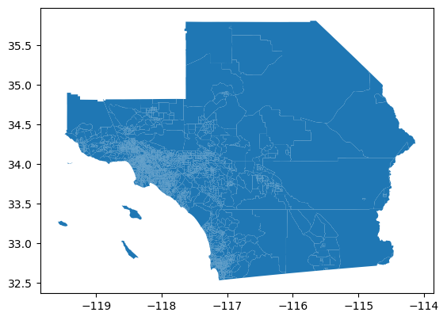
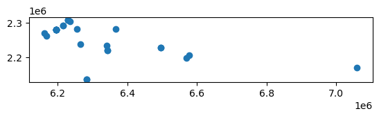
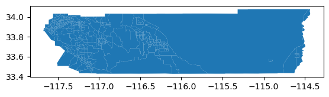

import warnings
warnings.simplefilter("ignore")Geoprocessing
Geoprocessing
Spatial data comes in a rich variety of forms and corresponding file formats. At the beginning of most geocomputational workflows, one is typically reading these different formats and applying different forms of spatial data processing (or geoprocessing) methods to the data.
In this notebook we cover a subset of geoprocessing methods:
- Reading geopackages and shapefiles
- Coordinate reference system transformations
- Spatial joins
- Spatial aggregations
Along the way we introduce the package geopandas which provides key spatial data processing functionality.
Reading Parquet Files
We begin with our first dataset that contains socieconomic data for census tracts in Southern California. The data are for the census year 2010 and are provided from the package GeoSNAP as a Parquet File.
import geopandas as gpdscag = gpd.read_parquet("data/scag_region.parquet") # read the geopackage type(scag)geopandas.geodataframe.GeoDataFramescag.columnsIndex(['geoid', 'n_asian_under_15', 'n_black_under_15', 'n_hispanic_under_15',
'n_native_under_15', 'n_white_under_15', 'n_persons_under_18',
'n_asian_over_60', 'n_black_over_60', 'n_hispanic_over_60',
...
'year', 'n_total_housing_units_sample', 'p_nonhisp_white_persons',
'p_white_over_60', 'p_black_over_60', 'p_hispanic_over_60',
'p_native_over_60', 'p_asian_over_60', 'p_disabled', 'geometry'],
dtype='object', length=194)type(scag)geopandas.geodataframe.GeoDataFramescag.head()| geoid | n_asian_under_15 | n_black_under_15 | n_hispanic_under_15 | n_native_under_15 | n_white_under_15 | n_persons_under_18 | n_asian_over_60 | n_black_over_60 | n_hispanic_over_60 | ... | year | n_total_housing_units_sample | p_nonhisp_white_persons | p_white_over_60 | p_black_over_60 | p_hispanic_over_60 | p_native_over_60 | p_asian_over_60 | p_disabled | geometry | |
|---|---|---|---|---|---|---|---|---|---|---|---|---|---|---|---|---|---|---|---|---|---|
| 0 | 06037128702 | 58.0 | 0.0 | 223.0 | 0.0 | 475.0 | 986.0 | NaN | NaN | NaN | ... | 2010 | 2903.0 | 64.726214 | NaN | NaN | NaN | NaN | NaN | NaN | POLYGON ((-118.44870 34.16485, -118.43997 34.1... |
| 1 | 06037131600 | 83.0 | 62.0 | 777.0 | 0.0 | 135.0 | 1355.0 | NaN | NaN | NaN | ... | 2010 | 1487.0 | 28.679979 | NaN | NaN | NaN | NaN | NaN | NaN | POLYGON ((-118.56229 34.22033, -118.55792 34.2... |
| 2 | 06037134104 | 287.0 | 17.0 | 816.0 | 0.0 | 61.0 | 1323.0 | NaN | NaN | NaN | ... | 2010 | 1388.0 | 14.846188 | NaN | NaN | NaN | NaN | NaN | NaN | POLYGON ((-118.57976 34.21558, -118.57539 34.2... |
| 3 | 06037134304 | 90.0 | 24.0 | 298.0 | 0.0 | 89.0 | 520.0 | NaN | NaN | NaN | ... | 2010 | 928.0 | 33.378933 | NaN | NaN | NaN | NaN | NaN | NaN | POLYGON ((-118.61472 34.21952, -118.61039 34.2... |
| 4 | 06037242000 | 0.0 | 229.0 | 681.0 | 0.0 | 0.0 | 1164.0 | NaN | NaN | NaN | ... | 2010 | 1054.0 | 0.058565 | NaN | NaN | NaN | NaN | NaN | NaN | POLYGON ((-118.25416 33.93882, -118.25413 33.9... |
5 rows × 194 columns
scag.shape (4580, 194)This tells us there are 4580 census tracts and 194 attributes measured for each tract.
scag.columnsIndex(['geoid', 'n_asian_under_15', 'n_black_under_15', 'n_hispanic_under_15',
'n_native_under_15', 'n_white_under_15', 'n_persons_under_18',
'n_asian_over_60', 'n_black_over_60', 'n_hispanic_over_60',
...
'year', 'n_total_housing_units_sample', 'p_nonhisp_white_persons',
'p_white_over_60', 'p_black_over_60', 'p_hispanic_over_60',
'p_native_over_60', 'p_asian_over_60', 'p_disabled', 'geometry'],
dtype='object', length=194)At least one of the attributes (columns) in the GeoDataFrame holds the geometries for the observations. In our case, this column is named geometry:
scag.geometry0 POLYGON ((-118.44870 34.16485, -118.43997 34.1...
1 POLYGON ((-118.56229 34.22033, -118.55792 34.2...
2 POLYGON ((-118.57976 34.21558, -118.57539 34.2...
3 POLYGON ((-118.61472 34.21952, -118.61039 34.2...
4 POLYGON ((-118.25416 33.93882, -118.25413 33.9...
...
4575 POLYGON ((-118.50373 34.42607, -118.50050 34.4...
4576 POLYGON ((-118.20731 33.90754, -118.20641 33.9...
4577 POLYGON ((-119.22134 34.18130, -119.21727 34.1...
4578 POLYGON ((-116.51068 33.80502, -116.51069 33.8...
4579 POLYGON ((-118.41379 34.17940, -118.41160 34.1...
Name: geometry, Length: 4580, dtype: geometryThis shows us that each of our observations is encoded as a Polygon geometry.
We can call the plot method of the GeoDataFrame to visualize these geometries:
scag.plot()
Note that the tract identifier column is geoid which encodes the 11-digit FIPS code.
Reading shapefiles
shapefiles are a common legacy spatial data format for vector data. Let’s explore a second data set that encodes mental health provider locations in Riverside County, California as points in a shapefile:
Reading a point shapefile
clinics_df = gpd.read_parquet('data/behavioralHealth.parquet')
clinics_df.columnsIndex(['OBJECTID', 'SITE_TYPE', 'SITE_NAME', 'ADDRESS', 'CITY', 'ZIPCODE',
'PHONE', 'geometry'],
dtype='object')clinics_df.head()| OBJECTID | SITE_TYPE | SITE_NAME | ADDRESS | CITY | ZIPCODE | PHONE | geometry | |
|---|---|---|---|---|---|---|---|---|
| 0 | 149.0 | Behavioral Health | Older Adult Services | 6355 Riverside Ave | Riverside | 92506 | 951-369-0219 | POINT (6216487.156 2291913.664) |
| 1 | 150.0 | Behavioral Health | Children'S Treatment Services | 9990 County Farm Rd | Riverside | 92503 | 951-358-4840 | POINT (6195566.226 2280519.190) |
| 2 | 151.0 | Behavioral Health | Family, Adolescent, And Children'S Treatment | 1195 Magnolia Ave | Corona | 91719 | 951-273-0608 | POINT (6168252.101 2261023.951) |
| 3 | 447.0 | Behavioral Health | Blythe Clinic | 1297 W Hobson Way | Blythe | 92225 | 760-770-2222 | POINT (7059944.605 2169652.046) |
| 4 | 152.0 | Behavioral Health | Interagency Services For Families | 9890 County Farm Rd | Riverside | 92503 | 951-358-4850 | POINT (6195949.672 2280510.302) |
clinics_df.plot()
clinics_df.geometry0 POINT (6216487.156 2291913.664)
1 POINT (6195566.226 2280519.190)
2 POINT (6168252.101 2261023.951)
3 POINT (7059944.605 2169652.046)
4 POINT (6195949.672 2280510.302)
5 POINT (6195566.226 2280519.190)
6 POINT (6255240.101 2281392.265)
7 POINT (6162865.861 2269381.489)
8 POINT (6195182.779 2280509.032)
9 POINT (6342387.266 2220024.356)
10 POINT (6195566.226 2280519.190)
11 POINT (6577094.185 2205388.907)
12 POINT (6195566.226 2280519.190)
13 POINT (6283871.161 2136729.378)
14 POINT (6229918.194 2307140.803)
15 POINT (6496477.603 2228753.546)
16 POINT (6342390.651 2220029.434)
17 POINT (6265042.293 2237006.918)
18 POINT (6341877.001 2233915.961)
19 POINT (6283867.341 2136731.288)
20 POINT (6367147.411 2280861.442)
21 POINT (6496480.142 2228757.355)
22 POINT (6570450.368 2198847.190)
23 POINT (6234956.516 2303352.150)
24 POINT (6195566.226 2280520.460)
25 POINT (6216489.695 2291912.394)
26 POINT (6229918.194 2307139.534)
27 POINT (6229920.733 2307139.534)
Name: geometry, dtype: geometryclinics_df.ADDRESS0 6355 Riverside Ave
1 9990 County Farm Rd
2 1195 Magnolia Ave
3 1297 W Hobson Way
4 9890 County Farm Rd
5 9990 County Farm Rd
6 23119 Cottonwood Ave
7 623 N Main St
8 10000 County Farm Rd
9 650 N State St
10 9990 County Farm Rd
11 83-912 Ave 45
12 9990 County Farm Rd
13 41002 County Center Dr
14 1827 Atlanta Ave
15 68-615 Perez Rd
16 650 N State St
17 1688 N Perris Blvd
18 950 N Ramona Blvd
19 41002 County Center Dr
20 1330 W Ramsey St
21 68-615 Perez Rd
22 47-825 Oasis St
23 769 Blaine St
24 9990 County Farm Rd
25 6355 Riverside Ave
26 1827 Atlanta Ave
27 1827 Atlanta Ave
Name: ADDRESS, dtype: objectlen(clinics_df.ADDRESS.unique()) # note some clinics have the same address (different types of services provided at same location)18Integrating spatial datasets
Let’s assume the role of a public health epidemiologist who is interested in equity issues surrounding access to mental health services. We have two datasets to work with here:
- the clinics (points in Riverside County)
- the tracts for all of Southern California
We will thus want to narrow down the focus to Riverside county. So first, we need to extract the tracts for the county from the larger region:
Extracting Riverside County Tracts
rc = scag[scag['geoid'].str.match("^06065")]
rc.plot()
Spatial Joins
With the two datasets in hand, we would like to know the answer to the following question:
How many clinics are in each census tract in Riverside County?
To get at this answer will can use a spatial join. The idea here is to create a linkage between each clinic (point) and the tract (polygon) that the clinic lies within.
The answer to our question will be the number of matches found for each census tract.
In geopandas the spatial join is done with the sjoin method of the GeoDataFrame:
clinics_tracts = gpd.sjoin(clinics_df, rc, op='within')We see a warning here, that alerts us to a mismatch between the CRS: Coordinate Reference Systems of the two GeoDataFrames. We can inspect these to see what is going on:
clinics_df.crs<Projected CRS: EPSG:2230>
Name: NAD83 / California zone 6 (ftUS)
Axis Info [cartesian]:
- X[east]: Easting (US survey foot)
- Y[north]: Northing (US survey foot)
Area of Use:
- name: United States (USA) - California - counties Imperial; Orange; Riverside; San Diego.
- bounds: (-118.15, 32.53, -114.42, 34.08)
Coordinate Operation:
- name: SPCS83 California zone 6 (US Survey feet)
- method: Lambert Conic Conformal (2SP)
Datum: North American Datum 1983
- Ellipsoid: GRS 1980
- Prime Meridian: Greenwichrc.crs<Geographic 2D CRS: EPSG:4326>
Name: WGS 84
Axis Info [ellipsoidal]:
- Lat[north]: Geodetic latitude (degree)
- Lon[east]: Geodetic longitude (degree)
Area of Use:
- name: World.
- bounds: (-180.0, -90.0, 180.0, 90.0)
Datum: World Geodetic System 1984 ensemble
- Ellipsoid: WGS 84
- Prime Meridian: GreenwichSo the clinics have a unit of feet, while the tracts are in degrees. The spatial join will be incorrect because of this since the observations from the two dataframes are in different coordinate systems:
clinics_tracts| OBJECTID | SITE_TYPE | SITE_NAME | ADDRESS | CITY | ZIPCODE | PHONE | geometry | index_right | geoid | ... | n_white_persons | year | n_total_housing_units_sample | p_nonhisp_white_persons | p_white_over_60 | p_black_over_60 | p_hispanic_over_60 | p_native_over_60 | p_asian_over_60 | p_disabled |
|---|
0 rows × 202 columns
To rectify this, we need to have both GeoDataFrames in the same CRS. Let’s change the CRS of the tracts GeoDataFrame which is currently:
rc.plot()
To change this, we notice the helpful suggestion in the warning above to use the to_crs method. Let’s try it to see how this works:
rc.to_crs(clinics_df.crs).plot()
Comparison of the two plots shows us that the CRS has been changed. We did not assign the object yet (which is good practice when experimenting). But it does what we need, so lets assign the result to redefine our tracts GeoDataFrame:
rc = rc.to_crs(clinics_df.crs)clinics_tracts = gpd.sjoin(clinics_df, rc, op='within')clinics_tracts| OBJECTID | SITE_TYPE | SITE_NAME | ADDRESS | CITY | ZIPCODE | PHONE | geometry | index_right | geoid | ... | n_white_persons | year | n_total_housing_units_sample | p_nonhisp_white_persons | p_white_over_60 | p_black_over_60 | p_hispanic_over_60 | p_native_over_60 | p_asian_over_60 | p_disabled | |
|---|---|---|---|---|---|---|---|---|---|---|---|---|---|---|---|---|---|---|---|---|---|
| 0 | 149.0 | Behavioral Health | Older Adult Services | 6355 Riverside Ave | Riverside | 92506 | 951-369-0219 | POINT (6216487.156 2291913.664) | 661 | 06065031100 | ... | NaN | 2010 | 1715.0 | 49.159311 | NaN | NaN | NaN | NaN | NaN | NaN |
| 25 | 146.0 | Behavioral Health | Adult Mental Health Services - Central Clinic | 6355 Riverside Ave | Riverside | 92506 | 951-369-5714 | POINT (6216489.695 2291912.394) | 661 | 06065031100 | ... | NaN | 2010 | 1715.0 | 49.159311 | NaN | NaN | NaN | NaN | NaN | NaN |
| 1 | 150.0 | Behavioral Health | Children'S Treatment Services | 9990 County Farm Rd | Riverside | 92503 | 951-358-4840 | POINT (6195566.226 2280519.190) | 1798 | 06065041201 | ... | NaN | 2010 | 1135.0 | 25.836431 | NaN | NaN | NaN | NaN | NaN | NaN |
| 4 | 152.0 | Behavioral Health | Interagency Services For Families | 9890 County Farm Rd | Riverside | 92503 | 951-358-4850 | POINT (6195949.672 2280510.302) | 1798 | 06065041201 | ... | NaN | 2010 | 1135.0 | 25.836431 | NaN | NaN | NaN | NaN | NaN | NaN |
| 5 | 448.0 | Behavioral Health | Children'S Evaluation Services Unite | 9990 County Farm Rd | Riverside | 92503 | 951-358-7380 | POINT (6195566.226 2280519.190) | 1798 | 06065041201 | ... | NaN | 2010 | 1135.0 | 25.836431 | NaN | NaN | NaN | NaN | NaN | NaN |
| 8 | 154.0 | Behavioral Health | Van Horn Counseling Center | 10000 County Farm Rd | Riverside | 92503 | 951-358-4390 | POINT (6195182.779 2280509.032) | 1798 | 06065041201 | ... | NaN | 2010 | 1135.0 | 25.836431 | NaN | NaN | NaN | NaN | NaN | NaN |
| 10 | 155.0 | Behavioral Health | Inpatient Treatment Facility | 9990 County Farm Rd | Riverside | 92503 | 951-358-4700 | POINT (6195566.226 2280519.190) | 1798 | 06065041201 | ... | NaN | 2010 | 1135.0 | 25.836431 | NaN | NaN | NaN | NaN | NaN | NaN |
| 12 | 156.0 | Behavioral Health | Emergency Treatment Services | 9990 County Farm Rd | Riverside | 92503 | 951-358-4881 | POINT (6195566.226 2280519.190) | 1798 | 06065041201 | ... | NaN | 2010 | 1135.0 | 25.836431 | NaN | NaN | NaN | NaN | NaN | NaN |
| 24 | 145.0 | Behavioral Health | Adult Mental Health Services - West Clinic | 9990 County Farm Rd | Riverside | 92503 | 951-358-4647 | POINT (6195566.226 2280520.460) | 1798 | 06065041201 | ... | NaN | 2010 | 1135.0 | 25.836431 | NaN | NaN | NaN | NaN | NaN | NaN |
| 2 | 151.0 | Behavioral Health | Family, Adolescent, And Children'S Treatment | 1195 Magnolia Ave | Corona | 91719 | 951-273-0608 | POINT (6168252.101 2261023.951) | 517 | 06065041813 | ... | NaN | 2010 | 2084.0 | 28.686088 | NaN | NaN | NaN | NaN | NaN | NaN |
| 3 | 447.0 | Behavioral Health | Blythe Clinic | 1297 W Hobson Way | Blythe | 92225 | 760-770-2222 | POINT (7059944.605 2169652.046) | 242 | 06065046102 | ... | NaN | 2010 | 887.0 | 14.184009 | NaN | NaN | NaN | NaN | NaN | NaN |
| 6 | 153.0 | Behavioral Health | Children'S Interagency Program | 23119 Cottonwood Ave | Moreno Valley | 92553 | 951-413-5678 | POINT (6255240.101 2281392.265) | 1818 | 06065042512 | ... | NaN | 2010 | 968.0 | 9.930314 | NaN | NaN | NaN | NaN | NaN | NaN |
| 7 | 449.0 | Behavioral Health | Substance Abuse Outpatient Program | 623 N Main St | Corona | 92880 | 951-737-2962 | POINT (6162865.861 2269381.489) | 1875 | 06065040809 | ... | NaN | 2010 | 1026.0 | 29.670330 | NaN | NaN | NaN | NaN | NaN | NaN |
| 9 | 450.0 | Behavioral Health | Substance Abuse Outpatient Program | 650 N State St | Hemet | 92543 | 951-791-3350 | POINT (6342387.266 2220024.356) | 1212 | 06065043507 | ... | NaN | 2010 | 2674.0 | 39.315175 | NaN | NaN | NaN | NaN | NaN | NaN |
| 16 | 137.0 | Behavioral Health | Hemet Clinic | 650 N State St | Hemet | 92543 | 951-971-3300 | POINT (6342390.651 2220029.434) | 1212 | 06065043507 | ... | NaN | 2010 | 2674.0 | 39.315175 | NaN | NaN | NaN | NaN | NaN | NaN |
| 11 | 451.0 | Behavioral Health | Substance Abuse Outpatient Program | 83-912 Ave 45 | Indio | 92201 | 760-347-0754 | POINT (6577094.185 2205388.907) | 2466 | 06065045303 | ... | NaN | 2010 | 843.0 | 4.670699 | NaN | NaN | NaN | NaN | NaN | NaN |
| 13 | 452.0 | Behavioral Health | Substance Abuse Outpatient Program | 41002 County Center Dr | Temecula | 92591 | 951-600-6360 | POINT (6283871.161 2136729.378) | 4266 | 06065049600 | ... | NaN | 2010 | 2443.0 | 58.274250 | NaN | NaN | NaN | NaN | NaN | NaN |
| 19 | 140.0 | Behavioral Health | Temecula Clinic | 41002 County Center Dr | Temecula | 92590 | 951-600-6355 | POINT (6283867.341 2136731.288) | 4266 | 06065049600 | ... | NaN | 2010 | 2443.0 | 58.274250 | NaN | NaN | NaN | NaN | NaN | NaN |
| 14 | 157.0 | Behavioral Health | Substance Abuse Outpatient Program | 1827 Atlanta Ave | Riverside | 92503 | 951-955-2105 | POINT (6229918.194 2307140.803) | 1546 | 06065042209 | ... | NaN | 2010 | 1586.0 | 31.134793 | NaN | NaN | NaN | NaN | NaN | NaN |
| 26 | 147.0 | Behavioral Health | Adult System Of Care | 1827 Atlanta Ave | Riverside | 92507 | 951-955-8000 | POINT (6229918.194 2307139.534) | 1546 | 06065042209 | ... | NaN | 2010 | 1586.0 | 31.134793 | NaN | NaN | NaN | NaN | NaN | NaN |
| 27 | 148.0 | Behavioral Health | Jefferson Wellness Center | 1827 Atlanta Ave | Riverside | 92507 | 951-955-8000 | POINT (6229920.733 2307139.534) | 1546 | 06065042209 | ... | NaN | 2010 | 1586.0 | 31.134793 | NaN | NaN | NaN | NaN | NaN | NaN |
| 15 | 158.0 | Behavioral Health | Substance Abuse Outpatient Program | 68-615 Perez Rd | Cathedral City | 92234 | 760-770-2222 | POINT (6496477.603 2228753.546) | 2453 | 06065045000 | ... | NaN | 2010 | 1820.0 | 43.139842 | NaN | NaN | NaN | NaN | NaN | NaN |
| 21 | 142.0 | Behavioral Health | Cathedral City Clinic | 68-615 Perez Rd | Cathedral City | 92234 | 760-770-2222 | POINT (6496480.142 2228757.355) | 2453 | 06065045000 | ... | NaN | 2010 | 1820.0 | 43.139842 | NaN | NaN | NaN | NaN | NaN | NaN |
| 17 | 138.0 | Behavioral Health | Perris Clinic | 1688 N Perris Blvd | Perris | 92570 | 951-443-2200 | POINT (6265042.293 2237006.918) | 4515 | 06065042620 | ... | NaN | 2010 | 2671.0 | 17.630000 | NaN | NaN | NaN | NaN | NaN | NaN |
| 18 | 139.0 | Behavioral Health | San Jacinto Clinic | 950 N Ramona Blvd | San Jacinto | 92582 | 951-487-2674 | POINT (6341877.001 2233915.961) | 2955 | 06065051300 | ... | NaN | 2010 | 3064.0 | 45.269270 | NaN | NaN | NaN | NaN | NaN | NaN |
| 20 | 141.0 | Behavioral Health | Banning Clinic | 1330 W Ramsey St | Banning | 92220 | 951-849-7142 | POINT (6367147.411 2280861.442) | 231 | 06065044101 | ... | NaN | 2010 | 1223.0 | 35.014233 | NaN | NaN | NaN | NaN | NaN | NaN |
| 22 | 143.0 | Behavioral Health | Indio Clinic | 47-825 Oasis St | Indio | 92201 | 760-863-8455 | POINT (6570450.368 2198847.190) | 2467 | 06065045501 | ... | NaN | 2010 | 1615.0 | 8.739635 | NaN | NaN | NaN | NaN | NaN | NaN |
| 23 | 144.0 | Behavioral Health | Adult Mental Health Services - Blaine Clinic | 769 Blaine St | Riverside | 92507 | 951-358-4705 | POINT (6234956.516 2303352.150) | 172 | 06065042210 | ... | NaN | 2010 | 2047.0 | 26.254459 | NaN | NaN | NaN | NaN | NaN | NaN |
28 rows × 202 columns
Now we see the spatial join has worked. There are 28 matches (one for each clinic) and this is stored in a new GeoDataFrame called: clinics_tracts.
Determine the number of clinics in each tract
Returning to our question, we can find the number of clinics in each of the tracts in this new GeoDataFrame by using the group_by method:
clinics_tracts[['geoid', 'index_right']].groupby('geoid').agg('count')| index_right | |
|---|---|
| geoid | |
| 06065031100 | 2 |
| 06065040809 | 1 |
| 06065041201 | 7 |
| 06065041813 | 1 |
| 06065042209 | 3 |
| 06065042210 | 1 |
| 06065042512 | 1 |
| 06065042620 | 1 |
| 06065043507 | 2 |
| 06065044101 | 1 |
| 06065045000 | 2 |
| 06065045303 | 1 |
| 06065045501 | 1 |
| 06065046102 | 1 |
| 06065049600 | 2 |
| 06065051300 | 1 |
This works, so let’s create another DataFrame to store these counts:
ct = clinics_tracts[['geoid', 'index_right']].groupby('geoid').agg('count')
ct.shape(16, 1)Table Join
We now know for the tracts that contain at least one clinic, how many clinics they contain. This implies that the tracts that are not in the ct GeoDataFrame do not contain a clinic. What we would like to have is an additional attribute on our rc tracts GeoDataFrame that stores the number of clinics in each tract - for all tracts in Riverside County.
We can do this in two remaining steps:
- a table join on the
geoidcolumn - setting NA values to 0
rc.merge(ct, on='geoid')| geoid | n_asian_under_15 | n_black_under_15 | n_hispanic_under_15 | n_native_under_15 | n_white_under_15 | n_persons_under_18 | n_asian_over_60 | n_black_over_60 | n_hispanic_over_60 | ... | n_total_housing_units_sample | p_nonhisp_white_persons | p_white_over_60 | p_black_over_60 | p_hispanic_over_60 | p_native_over_60 | p_asian_over_60 | p_disabled | geometry | index_right | |
|---|---|---|---|---|---|---|---|---|---|---|---|---|---|---|---|---|---|---|---|---|---|
| 0 | 06065042210 | 14.0 | 4.0 | 392.0 | 0.0 | 49.0 | 626.0 | NaN | NaN | NaN | ... | 2047.0 | 26.254459 | NaN | NaN | NaN | NaN | NaN | NaN | POLYGON ((6231281.704 2304380.325, 6231334.275... | 1 |
| 1 | 06065044101 | 0.0 | 0.0 | 441.0 | 0.0 | 90.0 | 643.0 | NaN | NaN | NaN | ... | 1223.0 | 35.014233 | NaN | NaN | NaN | NaN | NaN | NaN | POLYGON ((6360916.988 2282317.240, 6368904.754... | 1 |
| 2 | 06065046102 | 0.0 | 16.0 | 409.0 | 0.0 | 8.0 | 500.0 | NaN | NaN | NaN | ... | 887.0 | 14.184009 | NaN | NaN | NaN | NaN | NaN | NaN | POLYGON ((7056901.702 2172059.918, 7059550.089... | 1 |
| 3 | 06065041813 | 22.0 | 0.0 | 1385.0 | 0.0 | 218.0 | 2055.0 | NaN | NaN | NaN | ... | 2084.0 | 28.686088 | NaN | NaN | NaN | NaN | NaN | NaN | POLYGON ((6163401.241 2262775.155, 6163930.681... | 1 |
| 4 | 06065031100 | 0.0 | 35.0 | 686.0 | 0.0 | 322.0 | 1383.0 | NaN | NaN | NaN | ... | 1715.0 | 49.159311 | NaN | NaN | NaN | NaN | NaN | NaN | POLYGON ((6212596.847 2292503.681, 6212608.840... | 2 |
| 5 | 06065043507 | 13.0 | 56.0 | 1180.0 | 62.0 | 148.0 | 1806.0 | NaN | NaN | NaN | ... | 2674.0 | 39.315175 | NaN | NaN | NaN | NaN | NaN | NaN | POLYGON ((6338337.356 2228280.689, 6339766.244... | 2 |
| 6 | 06065042209 | 0.0 | 17.0 | 276.0 | 0.0 | 99.0 | 604.0 | NaN | NaN | NaN | ... | 1586.0 | 31.134793 | NaN | NaN | NaN | NaN | NaN | NaN | POLYGON ((6227628.847 2309774.902, 6229897.721... | 3 |
| 7 | 06065041201 | 66.0 | 14.0 | 704.0 | 0.0 | 94.0 | 1235.0 | NaN | NaN | NaN | ... | 1135.0 | 25.836431 | NaN | NaN | NaN | NaN | NaN | NaN | POLYGON ((6191323.029 2284972.603, 6191482.639... | 7 |
| 8 | 06065042512 | 115.0 | 220.0 | 674.0 | 0.0 | 56.0 | 1239.0 | NaN | NaN | NaN | ... | 968.0 | 9.930314 | NaN | NaN | NaN | NaN | NaN | NaN | POLYGON ((6254926.536 2282777.436, 6255161.965... | 1 |
| 9 | 06065040809 | 92.0 | 79.0 | 328.0 | 12.0 | 129.0 | 952.0 | NaN | NaN | NaN | ... | 1026.0 | 29.670330 | NaN | NaN | NaN | NaN | NaN | NaN | POLYGON ((6161525.232 2270923.411, 6162129.783... | 1 |
| 10 | 06065045000 | 0.0 | 0.0 | 696.0 | 0.0 | 115.0 | 1013.0 | NaN | NaN | NaN | ... | 1820.0 | 43.139842 | NaN | NaN | NaN | NaN | NaN | NaN | POLYGON ((6491233.939 2220786.970, 6491908.163... | 2 |
| 11 | 06065045303 | 0.0 | 0.0 | 822.0 | 0.0 | 0.0 | 1190.0 | NaN | NaN | NaN | ... | 843.0 | 4.670699 | NaN | NaN | NaN | NaN | NaN | NaN | POLYGON ((6566733.269 2209587.002, 6567651.882... | 1 |
| 12 | 06065045501 | 0.0 | 12.0 | 1621.0 | 10.0 | 96.0 | 2097.0 | NaN | NaN | NaN | ... | 1615.0 | 8.739635 | NaN | NaN | NaN | NaN | NaN | NaN | POLYGON ((6566573.447 2201041.319, 6566587.043... | 1 |
| 13 | 06065051300 | 109.0 | 58.0 | 1348.0 | 164.0 | 635.0 | 2563.0 | NaN | NaN | NaN | ... | 3064.0 | 45.269270 | NaN | NaN | NaN | NaN | NaN | NaN | POLYGON ((6331082.861 2256322.304, 6333704.092... | 1 |
| 14 | 06065049600 | 224.0 | 53.0 | 521.0 | 37.0 | 989.0 | 2182.0 | NaN | NaN | NaN | ... | 2443.0 | 58.274250 | NaN | NaN | NaN | NaN | NaN | NaN | POLYGON ((6280386.943 2140389.101, 6280920.820... | 2 |
| 15 | 06065042620 | 77.0 | 383.0 | 2143.0 | 43.0 | 237.0 | 3436.0 | NaN | NaN | NaN | ... | 2671.0 | 17.630000 | NaN | NaN | NaN | NaN | NaN | NaN | POLYGON ((6254341.213 2261739.227, 6256667.021... | 1 |
16 rows × 195 columns
Note that this isn’t quite what we want as it only matches the 16 tracts containing clinics. We can change the how argument to outer to include all tracts:
rc.merge(ct, on='geoid', how='outer')| geoid | n_asian_under_15 | n_black_under_15 | n_hispanic_under_15 | n_native_under_15 | n_white_under_15 | n_persons_under_18 | n_asian_over_60 | n_black_over_60 | n_hispanic_over_60 | ... | n_total_housing_units_sample | p_nonhisp_white_persons | p_white_over_60 | p_black_over_60 | p_hispanic_over_60 | p_native_over_60 | p_asian_over_60 | p_disabled | geometry | index_right | |
|---|---|---|---|---|---|---|---|---|---|---|---|---|---|---|---|---|---|---|---|---|---|
| 0 | 06065042005 | 7.0 | 157.0 | 259.0 | 0.0 | 540.0 | 1472.0 | NaN | NaN | NaN | ... | 1511.0 | 52.240247 | NaN | NaN | NaN | NaN | NaN | NaN | POLYGON ((6220451.886 2273544.863, 6222975.821... | NaN |
| 1 | 06065042210 | 14.0 | 4.0 | 392.0 | 0.0 | 49.0 | 626.0 | NaN | NaN | NaN | ... | 2047.0 | 26.254459 | NaN | NaN | NaN | NaN | NaN | NaN | POLYGON ((6231281.704 2304380.325, 6231334.275... | 1.0 |
| 2 | 06065042403 | 10.0 | 62.0 | 604.0 | 0.0 | 142.0 | 1153.0 | NaN | NaN | NaN | ... | 1194.0 | 27.105703 | NaN | NaN | NaN | NaN | NaN | NaN | POLYGON ((6265534.814 2293274.461, 6268193.946... | NaN |
| 3 | 06065042405 | 17.0 | 570.0 | 877.0 | 0.0 | 140.0 | 1949.0 | NaN | NaN | NaN | ... | 1960.0 | 12.679643 | NaN | NaN | NaN | NaN | NaN | NaN | POLYGON ((6254901.013 2289559.243, 6257552.324... | NaN |
| 4 | 06065042507 | 6.0 | 196.0 | 1132.0 | 0.0 | 47.0 | 1778.0 | NaN | NaN | NaN | ... | 1209.0 | 11.965812 | NaN | NaN | NaN | NaN | NaN | NaN | POLYGON ((6260074.881 2265634.857, 6260130.853... | NaN |
| ... | ... | ... | ... | ... | ... | ... | ... | ... | ... | ... | ... | ... | ... | ... | ... | ... | ... | ... | ... | ... | ... |
| 448 | 06065040603 | 0.0 | 0.0 | 354.0 | 0.0 | 26.0 | 544.0 | NaN | NaN | NaN | ... | 663.0 | 23.933856 | NaN | NaN | NaN | NaN | NaN | NaN | POLYGON ((6170360.166 2300927.182, 6175629.477... | NaN |
| 449 | 06065040701 | 17.0 | 0.0 | 142.0 | 0.0 | 332.0 | 669.0 | NaN | NaN | NaN | ... | 694.0 | 78.002378 | NaN | NaN | NaN | NaN | NaN | NaN | POLYGON ((6152825.515 2282403.524, 6153252.517... | NaN |
| 450 | 06065042738 | 149.0 | 65.0 | 549.0 | 0.0 | 531.0 | 1709.0 | NaN | NaN | NaN | ... | 2076.0 | 56.894592 | NaN | NaN | NaN | NaN | NaN | NaN | POLYGON ((6281402.995 2194126.577, 6286714.535... | NaN |
| 451 | 06065043309 | 0.0 | 59.0 | 493.0 | 6.0 | 204.0 | 855.0 | NaN | NaN | NaN | ... | 1165.0 | 44.564120 | NaN | NaN | NaN | NaN | NaN | NaN | POLYGON ((6346253.508 2219037.609, 6347578.743... | NaN |
| 452 | 06065044804 | 178.0 | 0.0 | 452.0 | 0.0 | 80.0 | 794.0 | NaN | NaN | NaN | ... | 1162.0 | 27.977189 | NaN | NaN | NaN | NaN | NaN | NaN | POLYGON ((6482476.986 2236646.419, 6482483.878... | NaN |
453 rows × 195 columns
Ok now we have all the tracts covered. But if you scroll to the right we will see NaN values for the tracts that do not contain a clinic. What remains is to replace the
rc.merge(ct, on='geoid', how='outer').fillna(0)| geoid | n_asian_under_15 | n_black_under_15 | n_hispanic_under_15 | n_native_under_15 | n_white_under_15 | n_persons_under_18 | n_asian_over_60 | n_black_over_60 | n_hispanic_over_60 | ... | n_total_housing_units_sample | p_nonhisp_white_persons | p_white_over_60 | p_black_over_60 | p_hispanic_over_60 | p_native_over_60 | p_asian_over_60 | p_disabled | geometry | index_right | |
|---|---|---|---|---|---|---|---|---|---|---|---|---|---|---|---|---|---|---|---|---|---|
| 0 | 06065042005 | 7.0 | 157.0 | 259.0 | 0.0 | 540.0 | 1472.0 | 0.0 | 0.0 | 0.0 | ... | 1511.0 | 52.240247 | 0.0 | 0.0 | 0.0 | 0.0 | 0.0 | 0.0 | POLYGON ((6220451.886 2273544.863, 6222975.821... | 0.0 |
| 1 | 06065042210 | 14.0 | 4.0 | 392.0 | 0.0 | 49.0 | 626.0 | 0.0 | 0.0 | 0.0 | ... | 2047.0 | 26.254459 | 0.0 | 0.0 | 0.0 | 0.0 | 0.0 | 0.0 | POLYGON ((6231281.704 2304380.325, 6231334.275... | 1.0 |
| 2 | 06065042403 | 10.0 | 62.0 | 604.0 | 0.0 | 142.0 | 1153.0 | 0.0 | 0.0 | 0.0 | ... | 1194.0 | 27.105703 | 0.0 | 0.0 | 0.0 | 0.0 | 0.0 | 0.0 | POLYGON ((6265534.814 2293274.461, 6268193.946... | 0.0 |
| 3 | 06065042405 | 17.0 | 570.0 | 877.0 | 0.0 | 140.0 | 1949.0 | 0.0 | 0.0 | 0.0 | ... | 1960.0 | 12.679643 | 0.0 | 0.0 | 0.0 | 0.0 | 0.0 | 0.0 | POLYGON ((6254901.013 2289559.243, 6257552.324... | 0.0 |
| 4 | 06065042507 | 6.0 | 196.0 | 1132.0 | 0.0 | 47.0 | 1778.0 | 0.0 | 0.0 | 0.0 | ... | 1209.0 | 11.965812 | 0.0 | 0.0 | 0.0 | 0.0 | 0.0 | 0.0 | POLYGON ((6260074.881 2265634.857, 6260130.853... | 0.0 |
| ... | ... | ... | ... | ... | ... | ... | ... | ... | ... | ... | ... | ... | ... | ... | ... | ... | ... | ... | ... | ... | ... |
| 448 | 06065040603 | 0.0 | 0.0 | 354.0 | 0.0 | 26.0 | 544.0 | 0.0 | 0.0 | 0.0 | ... | 663.0 | 23.933856 | 0.0 | 0.0 | 0.0 | 0.0 | 0.0 | 0.0 | POLYGON ((6170360.166 2300927.182, 6175629.477... | 0.0 |
| 449 | 06065040701 | 17.0 | 0.0 | 142.0 | 0.0 | 332.0 | 669.0 | 0.0 | 0.0 | 0.0 | ... | 694.0 | 78.002378 | 0.0 | 0.0 | 0.0 | 0.0 | 0.0 | 0.0 | POLYGON ((6152825.515 2282403.524, 6153252.517... | 0.0 |
| 450 | 06065042738 | 149.0 | 65.0 | 549.0 | 0.0 | 531.0 | 1709.0 | 0.0 | 0.0 | 0.0 | ... | 2076.0 | 56.894592 | 0.0 | 0.0 | 0.0 | 0.0 | 0.0 | 0.0 | POLYGON ((6281402.995 2194126.577, 6286714.535... | 0.0 |
| 451 | 06065043309 | 0.0 | 59.0 | 493.0 | 6.0 | 204.0 | 855.0 | 0.0 | 0.0 | 0.0 | ... | 1165.0 | 44.564120 | 0.0 | 0.0 | 0.0 | 0.0 | 0.0 | 0.0 | POLYGON ((6346253.508 2219037.609, 6347578.743... | 0.0 |
| 452 | 06065044804 | 178.0 | 0.0 | 452.0 | 0.0 | 80.0 | 794.0 | 0.0 | 0.0 | 0.0 | ... | 1162.0 | 27.977189 | 0.0 | 0.0 | 0.0 | 0.0 | 0.0 | 0.0 | POLYGON ((6482476.986 2236646.419, 6482483.878... | 0.0 |
453 rows × 195 columns
Great. Now we save our work and rename the column holding the clinic count:
rc = rc.merge(ct, on='geoid', how='outer').fillna(0)rc['index_right'].sum()28.0rc.rename(columns={'index_right': 'clinics'}, inplace=True)rc.clinics.sum()28.0type(rc)geopandas.geodataframe.GeoDataFrameExercise:
Create a shapefile for each of the counties in the Southern California dataframe, and write to data/FIPSCODE.shp. Where FIPSCODE is the 5-digit FIPS Code for the county.
# %load solutions/00.py
Geoprocessing by Serge Rey is licensed under a Creative Commons Attribution-NonCommercial-ShareAlike 4.0 International License.